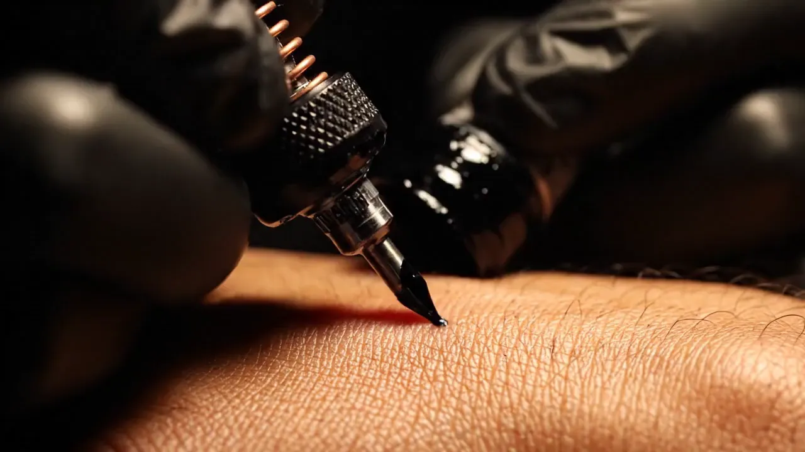
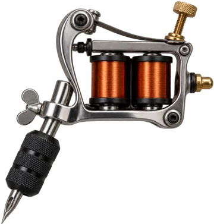
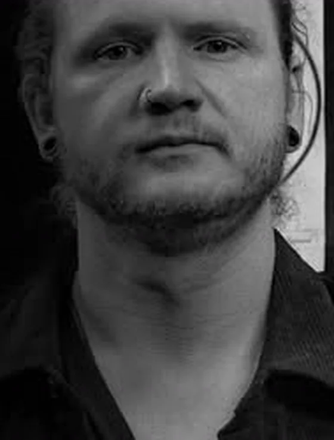

Tattoo collective · Pretoria East
Tattoo
Tattoo
Island
Realism, freehand and fineline by five artists at 714 Jacqueline Drive, Garsfontein.
Stencil to skin

Freehand floralDrawn straight onto the skin. No stencil. 
Horror sleeveBlack and grey faces for a horror sleeve. 
Floral leg sleeveDay one: the first flowers shaded in. 
Sleeve, in progressShaded flowers next to fresh linework. 
Floral lineworkClean lines from hip to thigh, ready for shading. 
Cover-upNew work over an older tattoo, done over two days. 
TurbochargerA car part as a tattoo: the stencil, ready to ink.
The work
Recent pieces from Carl's chair. Each one starts as its stencil and fills with ink as you scroll.
Try it on
Plan your placement
Turn the body and tap where you want ink. Draw it with the machine or drop on a design, then zoom out and do the next spot. Save your pieces to show Carl.

Drag to turn · tap a spot to tattoo it
Size
A collective of creatives
02Ace of Spades@ace_of_spades_tattoo
03Inked by Ryan@inkedby_ryan
04LS Inked@ls.inked
05October Ink@_october_ink
Five artists, one shore

Owner · realism · freehand · cover-upsCarl Jansen
Book a full day and he'll freehand it on the spot.
@carl_the_creator.2.0
How to book
WhatsApp 073 923 1024
Three steps to the chair
01Message Carl
WhatsApp 073 923 1024 is the fastest. An Instagram DM works too.
02Share your idea
Placement, size and a reference, or the sketch you drew above.
03Book the session
A sitting or a full day: small pieces, cover-ups, full sleeves.
Now in Pretoria East · by appointment